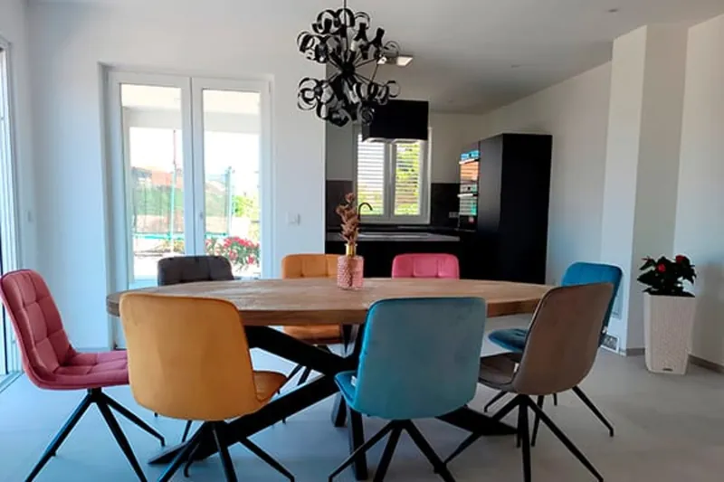

Za obitelji i prijatelje

More
Prizemlje · 125 m²more — more
3 spavaće sobe3 kupaoniceDo 6 gostijuTerasa & vrt
Admiral kuće: tri odvojene spavaće sobe, tri kupaonice s kadom i tušem, veliki dnevni boravak – i izravan izlaz u vrt do bazena. Stvoren za obitelji i prijatelje koji vole prostor.
3 velika bračna kreveta (king-size)